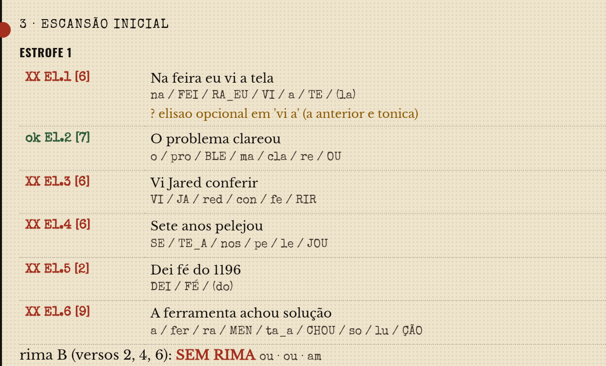
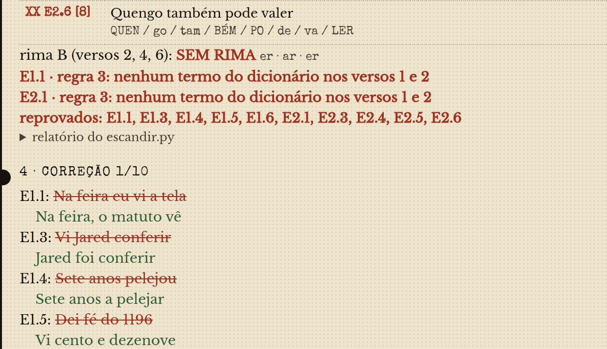
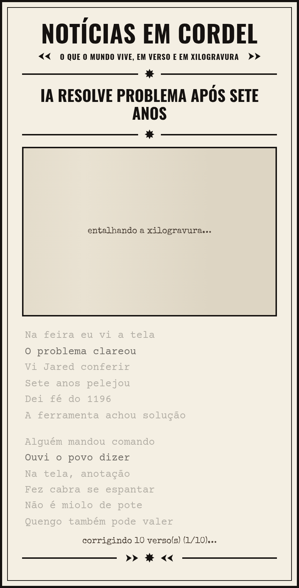
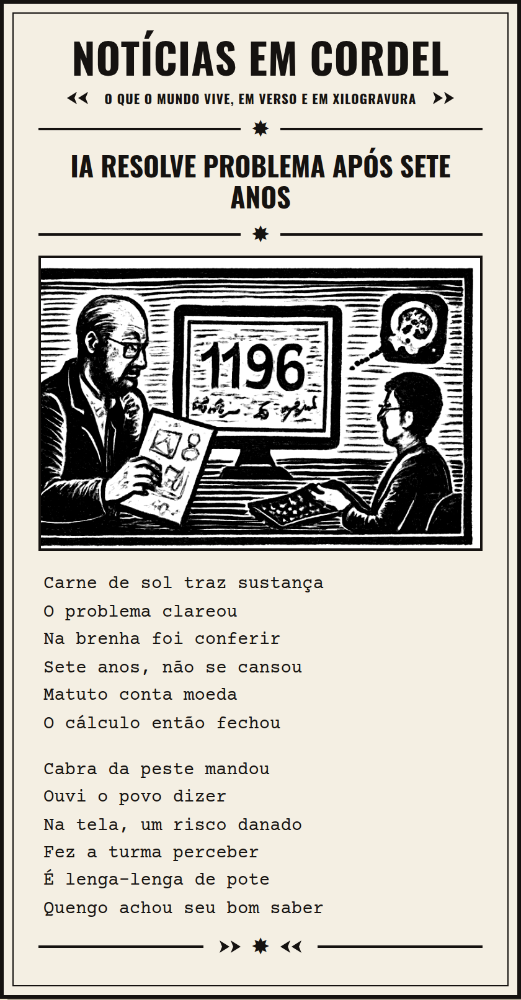

Grupo 6: Samuel Celso (scan), Gabriel Mayerhofer (gvm), Eliseu Cordeiro (ecb2),
Pedro Baptista (phab), Sara Lustosa (sccl), Ana Lívia Pessoa (alcp)
Projeto Autoral · Criatividade Computacional (IF866) · Centro de Informática, UFPE · 2026.2
Resumo. Este relatório descreve um sistema que reconta notícias semanais sobre inteligência artificial na forma de folhetos de cordel. A forma poética (sextilhas de sete sílabas) e a estética visual (xilogravura) são mantidas constantes, enquanto a notícia varia. Modelos de linguagem redigem os versos, e um verificador de escansão, escrito pelo grupo, decide o que entra na coleção: versos reprovados são reescritos em rodadas sucessivas de correção, e estrofes que permanecem fora da métrica são descartadas. Das 16 gerações feitas a partir de notícias do CriaComp News, 13 foram aprovadas, cobrindo 12 notícias distintas, com média de 3,4 rodadas de correção por folheto.
Palavras-chave: literatura de cordel; geração de texto; métrica poética; criatividade computacional.
Notícias de IA da semana, tiradas do CriaComp News, recontadas como folhetos de cordel. Cada folheto é uma notícia em sextilhas de sete sílabas, com rima nos versos pares e uma xilogravura na capa: a forma e a estética ficam constantes, só a notícia muda. Os versos são escritos por modelos de linguagem e conferidos por um verificador que conta as sílabas poéticas; o verso reprovado volta para correção, e a estrofe que continua fora da métrica vai para o descarte, com o motivo registrado. Um Tamagotchi com IA, um amador que resolve um desafio de matemática, a Coreia oferecendo IA grátis nos serviços públicos: a semana da inteligência artificial contada no ritmo da feira.
A produção de texto por sistemas de inteligência artificial tende ao volume e à rapidez. O cordel, por outro lado, foi historicamente um veículo de notícias no Nordeste brasileiro, com uma forma fixa que obriga a leitura lenta. O projeto parte desse contraste e propõe traduzir as notícias de IA da semana para essa forma tradicional, desacelerando a leitura por meio de uma forma artística popular.
O eixo declarado da coleção é o seguinte:
Gerar folhetos de cordel a partir das notícias de IA da semana do CriaComp News, mantendo constantes a forma (sextilhas de sete sílabas) e a estética de xilogravura, enquanto varia a notícia. Estrofes fora da métrica são descartadas.
O que se repete em todos os folhetos é a forma: sextilhas em redondilha maior (seis versos de sete sílabas poéticas, com rima nos versos pares) e a capa em xilogravura preto e branco. O que varia é a notícia. A restrição é formal e verificável: qualquer pessoa pode conferi-la com o mesmo script usado pelo grupo. Fica de fora da coleção todo folheto cuja estrofe permaneça fora da métrica ou da rima depois das rodadas de correção.
Foi desenvolvido um site que conduz cada notícia até o folheto final. O sistema utiliza a biblioteca AI SDK para Python com modelos da OpenAI: o gpt-6-luna para o texto, o gpt-5.5 no primeiro folheto e nos testes comparativos, e o gpt-image-2 e o gpt-image-1-mini para as xilogravuras. O processo segue seis etapas:
Em paralelo, outro modelo gera a xilogravura a partir do mesmo fato, por meio de uma chamada de ferramenta: o modelo de texto é obrigado a acionar a ferramenta de geração de imagem, e a imagem retorna junto com a resposta. Todas as chamadas são registradas integralmente (prompt, saída e parâmetros) no caderno de bordo.
A Tabela 1 resume as gerações feitas a partir de notícias do CriaComp News até 29 de setembro de 2026. Uma das notícias foi gerada duas vezes; na coleção fica a versão mais recente, o que resulta em 12 folhetos. Os folhetos mais recentes usam quatro estrofes.
| Gerações | Aprovadas | Descartadas | Notícias na coleção | Rodadas de correção (média) |
|---|---|---|---|---|
| 16 | 13 | 3 | 12 | 3,4 |
Para ilustrar o processo de correção, foi gerado um exemplo com duas estrofes a partir da notícia sobre um amador que resolveu um problema matemático com o auxílio de IA. Na primeira versão, 10 dos 12 versos foram reprovados por falha de métrica, rima ou regra do grupo (Figura 1). A cada rodada, apenas os versos reprovados foram reescritos (Figura 2), e o número de versos reprovados caiu de 10 para 9, 5, 4, 2, 1 e, por fim, 0, após seis rodadas. Este exemplo foi gerado para o relatório e não integra a coleção.
Figura 1 – Escansão inicial exibida pelo sistema

Fonte: elaborada pelos autores (2026).
Figura 2 – Primeira rodada de correção

Fonte: elaborada pelos autores (2026).
Durante a correção, o folheto é exibido com os versos pendentes esmaecidos; ao final, é apresentado completo, com a xilogravura (Figuras 3 e 4).
Figura 3 – Folheto durante a correção

Fonte: elaborada pelos autores (2026).
Figura 4 – Folheto aprovado

Fonte: elaborada pelos autores (2026).
A coleção passou por dois critérios de descarte. O primeiro é automático: três gerações foram descartadas pelo verificador, por métrica ou rima que resistiram às rodadas de correção (Tabela 2). O caso mais próximo de entrar foi o primeiro da tabela: um único verso com seis sílabas, após cinco rodadas, bastou para o descarte, o que evidencia que o critério é aplicado sem exceção.
| Folheto | Motivo registrado pelo verificador |
|---|---|
| IA detecta sinais de doença cardíaca em segundos | 1 verso com 6 sílabas (estrofe 3), após 5 rodadas |
| IA encontra sinais de doença cardíaca em segundos | 6 versos fora da métrica (estrofes 3 a 5), após 3 rodadas |
| Coreia do Sul prepara IA grátis para todos | rima quebrada (estrofe 4) e ligação entre estrofes sem rima, após 3 rodadas |
O segundo critério é de curadoria e decorre do eixo: a coleção só admite notícias da lista do CriaComp News. Cinco folhetos gerados durante os testes a partir de notícias de outras fontes foram retirados, ainda que quatro deles tivessem passado no verificador (Tabela 3). O site passou a aplicar essa regra automaticamente, comparando o link de cada notícia com a lista da disciplina; os folhetos retirados permanecem no histórico interno.
| Folheto | Situação no verificador |
|---|---|
| Meta lança Tamagotchi com inteligência artificial | aprovado (fonte: g1, fora da lista) |
| Turismo rural cresce 10% em Pernambuco | uma versão aprovada e outra descartada |
| Doze apostas de Pernambuco acertam a quadra | aprovado (notícia sem relação com IA) |
| Ônibus de Jundiaí serão gratuitos domingo | aprovado (notícia sem relação com IA) |
Os resultados indicam que os modelos de linguagem testados não respeitam a métrica de forma consistente na primeira tentativa; a restrição formal só é garantida pela verificação automática combinada à correção iterativa. Observou-se também que a aprovação métrica não assegura qualidade poética: há versos que cumprem as sete sílabas sem sentido claro. Nos folhetos mais recentes, o modelo também tendeu a repetir os mesmos termos do dicionário nordestino (a expressão "caixa dos peito" aparece em quatro dos seis últimos folhetos), o que mantém a curadoria do grupo como etapa necessária. Quanto à imagem, a estética de xilogravura foi reproduzida de forma consistente, embora o modelo ainda insira, ocasionalmente, números e letras não solicitados.
GRUPO 6. Do 7 ao 6: a semana em sextilha (coleção). 2026. Disponível em: https://cordel-generator-production.up.railway.app.
GRUPO 6. Do7ao6 (apresentação). 2026. Disponível em: https://cordel-generator-production.up.railway.app/static/Do7ao6.pdf.
GRUPO 6. cordel-generator: código-fonte e caderno de bordo. 2026. Disponível em: https://github.com/PeterBaptista/cordel-generator.